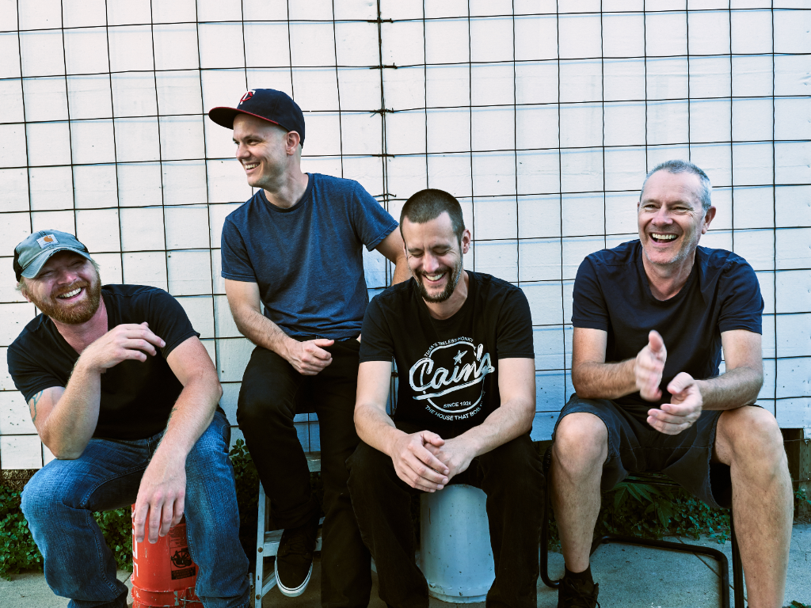
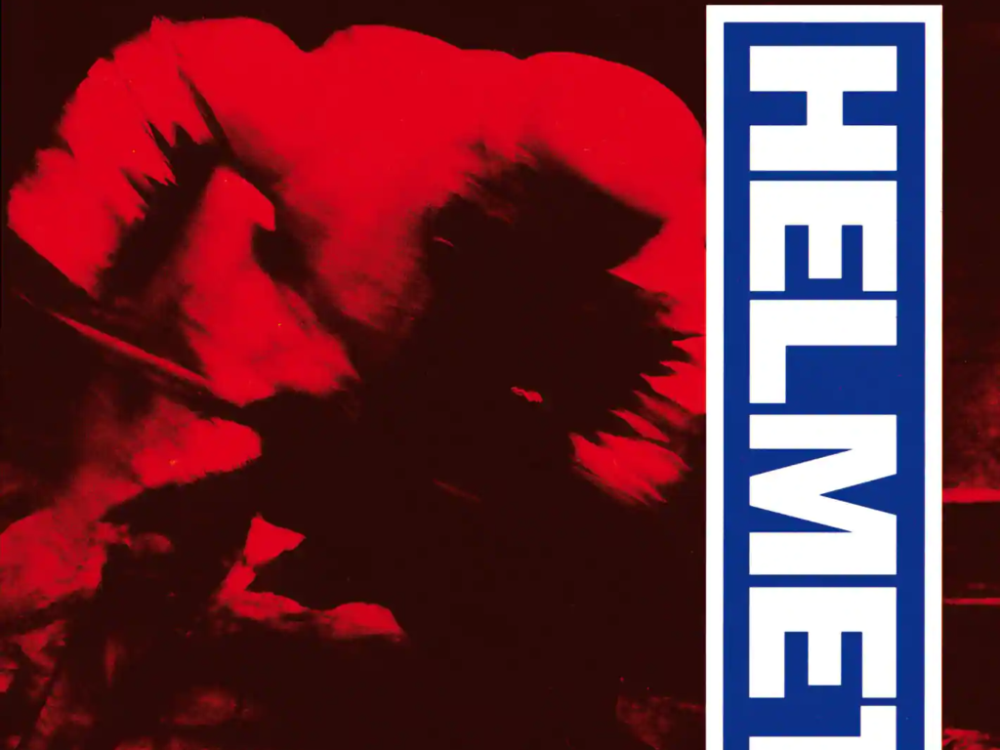
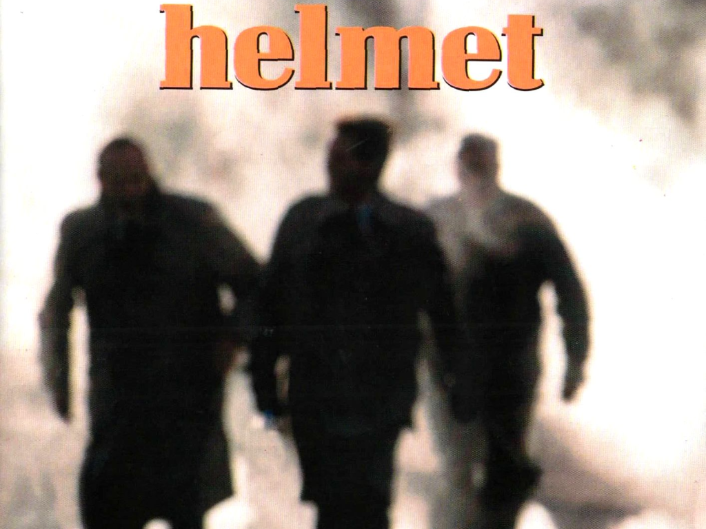

Helmet
Helmet es una banda de metal alternativo de Nueva York formada en 1989, inicialmente por Page Hamilton como vocalista y primera guitarra, John Stanier en la batería, Peter Mengede en la guitarra rítmica y Henry Bogdan en el bajo. Helmet ha tenido muchos cambios de alineación, siendo Hamilton el único miembro constante de la banda.
Helmet ha lanzado ocho álbumes de estudio y dos álbumes recopilatorios. Después de lanzar su álbum debut, Strap It On (1990), en Amphetamine Reptile, Helmet firmó con Interscope Records y lanzó tres álbumes para el sello, incluido el exitoso Meantime (1992). Sus dos álbumes siguientes, Betty (1994) y Aftertaste (1997), también fueron exitosos, pero no igualaron la aclamación crítica o popular de Meantime.
Helmet se separó en 1998, pero se reformó en 2004, y desde entonces ha lanzado cuatro álbumes más: Size Matters (2004), Monochrome (2006), Seeing Eye Dog (2010) y Dead to the World (2016). Actualmente, la banda está trabajando en su noveno álbum de estudio.
Inicios
La banda saltó al mainstream en 1992 al fichar por Interscope Records a principio de 1992. Se rumorea que recibieron más de 1 millón de dólares al firmar además de una improcedente cantidad de control sobre su trabajo. Su primer álbum con el sello, Meantime se lanzó en 1992 y se certificó como Oro en 1994. El álbum ha vendido alrededor de dos millones de copias en el mundo y sigue siendo su álbum más vendido.
A principios de 1993, el guitarrista Peter Mengede sale de la banda y forma Handsome los cuales solo lanzaron un álbum en 1997. Fue reemplazado por Rob Echeverria, guitarrista de la banda de hardcore Rest in Peaces.
La banda decidió empujar y grabar Aftertaste como trío. Una primera versión del álbum fue retirada a último minuto terminando 1996 cuando las actividades de promoción ya habían empezado. Posteriormente, el lanzamiento se retrasó a marzo de 1997 para una nueva mezcla de audio y el guitarrista Chris Traynor (anteriormente en Orange 9mm) fue reclutado para el tour del disco. Aunque "Exaclty Whay You Wanted" se había convertido en un moderado hit, el álbum solo estuvo unas pocas semanas en el Billboard 200. El tour de Aftertaste demostró en ser el último de la banda. En medio de largas disputas privadas, los miembros deciden retirarse. Preguntando por la separación, Hamilton respondió "9 años, 5 álbumes, 1600 shows, y encontramos difícil mirarnos el uno al otro más".
Albums
Strap It On

Es el álbum debut de la banda estadounidense de metal alternativo Helmet. Lanzado originalmente en 1990 a través de Amphetamine Reptile Records, fue posteriormente publicado por Interscope en noviembre de 1991.
Los críticos consideran álbum innovador para su, y explosivos, propulsores menudo entrecortado estilo riff que explotaba en gran medida de sintonía gota D. Desde entonces se ha convertido en un clásico de culto en el género post-hardcore e incluso influyente en la escena del metal. El malhumorado, "Sinatra" atmosférico difería de la mayoría de las canciones de ritmo acelerado e influidas por el metal en el álbum; su letra incluía una paráfrasis de la famosa frase de Dean Martin sobre el cantante, "Es el mundo de Sinatra / Simplemente vivimos en él".
El álbum recibió críticas positivas, y los críticos elogiaron el sonido fresco, crudo e innovador de la banda. Allmusic 's Jason Birchmeier escribió en su opinión "El álbum de nueve canciones es breve, en la hora en torno a una media hora, pero incluso tal brevedad demuestra maravillosamente agotadora por el que el tiempo cerca de las últimas canciones par. De hecho, por la Una vez que pasas por "Sinatra", uno de los aspectos más destacados del álbum y también en la mitad del camino, las fatigas lentas amenazan a medida que los riffs continúan martillando implacablemente y el vocalista de Hamilton, a veces melodioso, a veces agudo, se vuelve más agónico.
Meantime
Es el segundo álbum de estudio y debut en la gran discográfica de la banda estadounidense de metal alternativo Helmet, lanzado el 23 de junio de 1992 a través de Interscope Records.
A pesar de que inicialmente solo alcanzó un éxito comercial moderado, llegando al número 68 en la lista Billboard 200 tras su lanzamiento en 1992, el álbum influyó en múltiples bandas a su paso, y ha sido bien recibido por los críticos musicales y es considerado un influyente álbum del género de metal. Mientras tanto, ha seguido vendiéndose consistentemente bien en los años desde su lanzamiento, y en 1994 fue certificado oro por la Recording Industry Association of America. El álbum ha vendido más de 2 millones de copias en todo el mundo.
Helmet lanzó un sencillo de Meantime, " Unsung ", que fue un éxito de gráficos en la tabla de Modern Rock Tracks de EE. UU., Y sigue siendo su canción más conocida. Los videos musicales también se hicieron para "Unsung", "Give It" y "In the Meantime".
Meantime fue el primer álbum de avance de Helmet. Tras su lanzamiento en junio de 1992, Meantime alcanzó su punto máximo en el número 68 en la lista de éxitos Billboard's Top 200 y en la lista Top One Heatseekers. El álbum le otorgó a Helmet reconocimiento internacional. Hasta la fecha, Meantime es el único álbum de Helmet en ir a Gold en los Estados Unidos.
Betty

Betty es el tercer álbum de Helmet, lanzado en 1994 en Interscope. El álbum fue muy esperado tanto por los críticos de música como por los fanáticos como resultado del éxito de la banda con el álbum anterior, Meantime.
Rob Echeverria (guitarrista de la banda de hardcore de Nueva York Rest In Pieces ) reemplazó a Peter Mengede en la guitarra. A pesar de ser el álbum con mayor calificación de Helmet en los Estados Unidos, Betty no fue tan exitosa como Meantime, pero recibió críticas casi unánimes por parte de los críticos. Después de grabar y hacer giras en apoyo del álbum, Echeverria dejó Helmet en 1995 para unirse a Biohazard; sin embargo, su partida fue más amistosa que la de Mengede.
Antes del lanzamiento de Betty en junio de 1994, el mayor éxito del álbum, "Milquetoast", apareció en forma alternada en la banda sonora de The Crow como "Milktoast". Su video estaba en rotación regular en MTV, y también se lanzaron videos para "Wilma's Rainbow" y "Biscuits For Smut".
Usualmente considerado como el álbum experimental de Helmet, presenta un enfoque más amplio con incursiones en el jazz y el blues. Hamilton dijo "esas cosas fueron mis indulgencias. Intenté forzar la música en diferentes direcciones. Sé que muchos fanáticos estaban decepcionados, pero creo que es importante tratar de crecer musicalmente". Las marcas sonoras de Casco de riffs crujientes y tambores resonantes todavía definen el álbum. Betty, junto con Meantime y Aftertaste, se considera un texto definitivo en post-metal.
Aftertaste
Es el cuarto álbum de Helmet , lanzado en 1997 en Interscope . Esto resultó ser el último álbum de Helmet con miembros originales John Stanier (batería) y Henry Bogdan (bajo). El guitarrista Rob Echeverría , quien apareció en la salida anterior de Helmet, Betty , dejó el grupo para unirse a Biohazard . Posteriormente, el álbum fue grabado como una pieza de tres, con Page Hamilton cubriendo todas las partes de guitarra. El guitarrista Chris Traynor (antes de Orange 9mm ) se incorporó a la gira de apoyo.
El álbum se reunió con críticas mixtas a positivas de críticos de música. El escritor del equipo de AllMusic , Stephen Thomas Erlewine, dio al álbum una crítica negativa, al escribir "Sin la invención de Betty o la fuerza de la tripa de Meantime , Helmet es simplemente una banda de metal alternativo insípida, que carece de riffs, ganchos y propósito, y se basa únicamente en el volumen "Es un giro de eventos impactante y desalentador para una de las bandas de metal más intrigantes de los años 90".
Monochrome
Es el sexto álbum de la banda estadounidense de metal alternativo Helmet , lanzado en 2006 a través de Warcon . Este es el tercer álbum de Helmet en una fila que se grabará como un trío, con el nuevo baterista Mike Jost junto a los veteranos Page Hamilton y Chris Traynor . El bajista Jeremy Chatelain , quien reemplazó a Frank Bello en lagira de Size Matters , se unió a la banda para el Warped Tour 2006en apoyo de Monochrome .
Se dice que el álbum es un "regreso a las raíces", co-producido con Wharton Tiers , quien grabó los dos primeros álbumes de Helmet, Strap It On y Meantime .
Se sabe que al menos dos de las canciones, "Money Shot" y "Bury Me", pertenecen a la antigua banda de Hamilton, Gandhi , pero se han vuelto a grabar con la nueva línea Helmet.
Una versión de la canción "Requiem" de la banda Killing Joke se incluyó en el lanzamiento del vinilo. Las versiones del CD incluían un código para descargar la canción.
Reunión
Después de mudarse a Los Angeles, Hamilton empezó a trabajar con John Tempesta (antes en Testament y White Zombie) en un nuevo proyecto, Hamilton fue presionado por Jimmy Ivoinne de Interscope para lanzarlo bajo el nombre de Helmet, los cuales Interscope mantenía los derechos y Hamilton se resistió por un tiempo, pero desde que sus relaciones con Bogdan y Stanier no mejoraran desde 1998 y sus previas ofertas a reunirlos fueron rechazadas o ignoradas, decidió seguir y publicar más música como Helmet sin ellos.
Chris Traynor con el que seguía en buenos términos, llegó a bordo a cubrir el bajo y partes de guitarras. Con Tempesta en la batería y Hamilton cubriendo las voces y la guitarra, el trío grabó Size Matters a principios de 2004. Para el tour del álbum, reclutaron a Frank Bello, sin embargo, sale antes de terminar el tour para reunirse con su banda original Anthrax. Jeremy Chatelain lo reemplazó para terminar el tour. Tempesta se va a principios de 2006 a unirse a The Cult.
A finales de 2005 Helmet se separa de Inerscope. Por entonces, fichan con Warcon Enterprises y anunció un nuevo álbum en progreso. El nuevo álbum fue grabado y co-producido por Wharton Tiers quien grabó los primeros discos de la banda, Strap it On y Meantime. Para el álbum Hamilton y Traynor volvieron al estudio y reclutaron a un nuevo baterista, Mike Jost (anteriormente en Adair). Helmet encabezó el Warped Tour de 2006 en apoyo al nuevo álbum y Jeremy Chatelain volvió a su rol del anterior tour.
En septiembre de 2006 Chris Traynor anunció que se va de la banda después de trabajar casi una década con Hamilton. Pocos días después Mike Jost también decide salirse de la banda a tomar sus roles de nuevo padre. Jeremy Chatelain también tenía otros compromisos. Hamilton a principios de octubre anuncio un nuevo baterista y bajista, Kyle Stevenson y Jon Fuller. El australiano Jimmy Thompson también se unió a la banda en la guitarra y fue reemplazado por Dan Beeman el 2008. Debido a los cambió Hamilton fue forzado a cancelar muchas fechas de EEUU y Europa. En diciembre teleoneó a Guns N Roses en las fechas restantes de su tour.